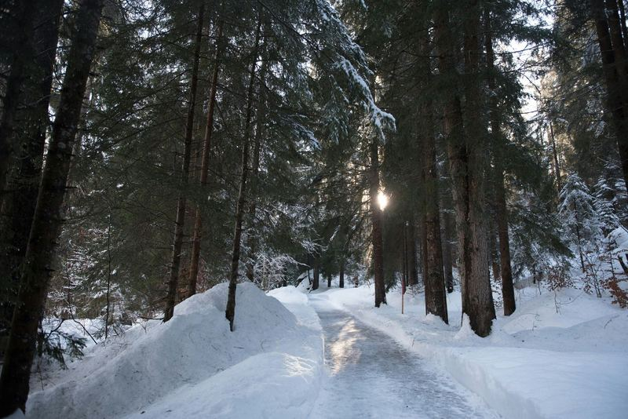
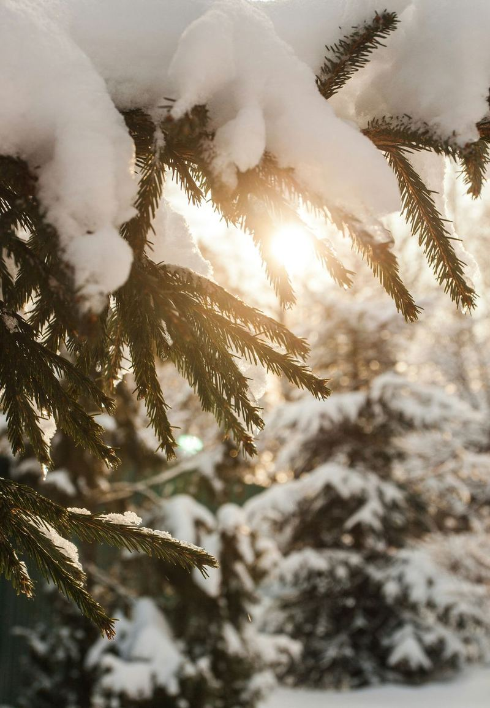
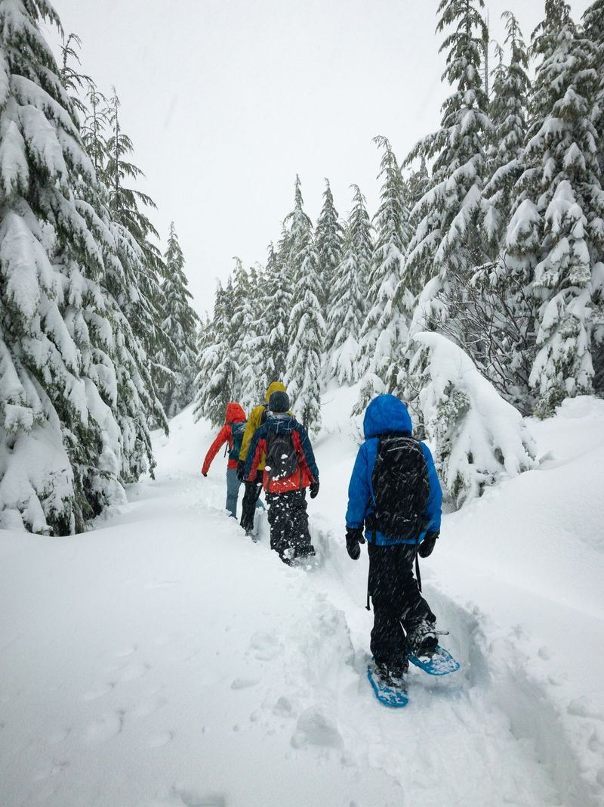
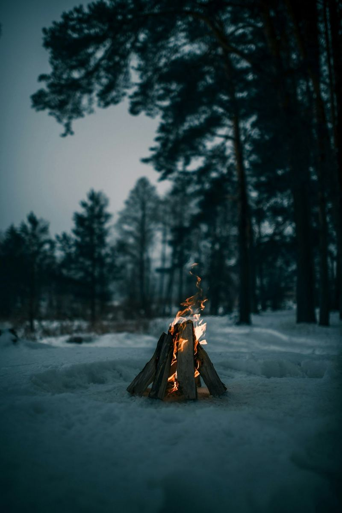
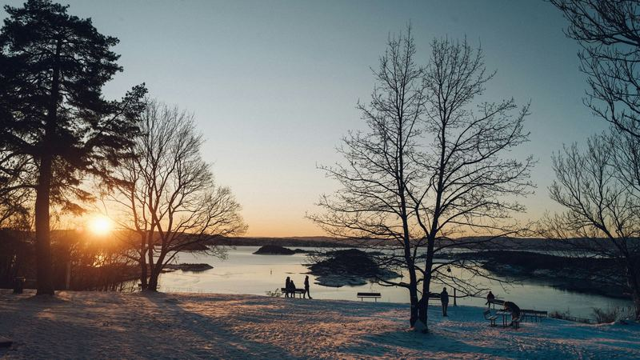

Most visitors see Oslo in winter as a city break with cold weather. Locals see it differently: winter is the season when the forest above the city turns white, the lakes freeze, and the whole town heads up the metro line with skis, sledges and thermoses. The best of Oslo in winter is outdoors — and almost all of it is reachable on an ordinary metro ticket.

1. Take the metro into the snowy forest
The single best thing to do in Oslo in winter is to leave the city — which here takes about 25 minutes. The metro climbs out of the centre into Nordmarka, a huge forest of spruce, frozen lakes and trails that begins where the city's northern suburbs end. Osloites ski, walk and sledge here every weekend.
Line 1 runs up the hillside to Frognerseteren, almost 500 metres above sea level, where snow is far more reliable than in the city below. Line 5 goes to Sognsvann, a lake at the forest's edge. Both are covered by an ordinary Ruter zone 1 ticket — buy it in the Ruter app before you board.
Best for: Everyone — this is the essential Oslo winter experience
2. Holmenkollen ski jump and Ski Museum
The Holmenkollen ski jump is visible from almost everywhere in Oslo, and the view from its top is one of the best over the city and the fjord. Underneath it sits the Ski Museum, the oldest of its kind in the world, covering four thousand years of skiing and the polar expeditions of Nansen and Amundsen.
It is a short, steep walk up from Holmenkollen station. Combine it with Frognerseteren further up the same metro line — the historic timber restaurant there is famous for its apple cake. Check opening hours before you go, as they are shorter in winter.
Best for: First-time visitors, sports fans, anyone who wants the view
3. Sledge down the Korketrekkeren
The Korketrekkeren — "the corkscrew" — is a toboggan run of about two kilometres that winds down from Frognerseteren through the forest. At the bottom you hop back on the metro, ride up and go again. Sledges and helmets can be rented near Frognerseteren station.
It is fast, cold and great fun, but it is not a children's slope: the run is steep in places and shared with locals who know it well. It only opens when there is enough snow, so check conditions on the day.
Best for: Groups of friends, families with older children, adrenaline on a budget
4. Go snowshoeing or winter hiking in Nordmarka
Groomed ski tracks fill Nordmarka in winter, but you don't need to ski to enjoy it. On snowshoes you can walk off the tracks into deep snow, among spruce trees bent under their load, to frozen lakes and quiet viewpoints. When the snow is thin or icy, walking with ice spikes and poles works just as well.
The trails are easy to find but hard to read for a visitor: tracks are reserved for skiers, paths change with the snow and darkness comes early. Going with someone who knows the forest makes it relaxed rather than stressful. Our Winter Forest Hike is a private guided half-day from central Oslo, with snowshoes or ice spikes provided.
Best for: Anyone who wants the real Norwegian forest without skiingWant a local to take you into the forest?
Oslo Hiking Tours runs two private winter tours in Nordmarka, from December to March: the Winter Forest Hike (about 4 hours, NOK 4 000 per group) and the Campfire Evening Walk (about 3 hours, NOK 3 500 per group). Up to 4 guests, just your group and your guide, meeting in central Oslo.

5. Walk around a frozen Sognsvann
Sognsvann is a lake at the very end of metro line 5, and the loop around it is about three kilometres of flat, wide path. In winter the lake freezes over and the shores fill with skiers, dog walkers and families. It is the easiest way to feel the forest without any planning.
Locals do walk and ski on the ice once it is thick enough, but conditions change from week to week. Unless you know the ice is safe, stay on the path. Bring ice spikes — the trail itself is often icy.
Best for: An easy, independent outing for any fitness level
6. Spend an evening by a campfire in the forest
With darkness falling by mid-afternoon in December, Norwegians don't stop going outside — they bring a headlamp. Walking through the snowy forest at night, with the city lights below, ending at a crackling fire, is one of the most memorable things you can do in Oslo in winter.
Fires are allowed in the forest in winter, but finding a good spot, dry wood and the way back in the dark is easier with company. Our Campfire Evening Walk is a private guided headlamp walk from central Oslo to a fire in the woods — headlamps included.
Best for: Couples, families, anyone with a free evening after a day in the city
7. Ice skating and Christmas lights in the city
In the city centre, the park at Spikersuppa on Karl Johans gate turns into an outdoor ice rink in winter. Skating is free and skates can be rented on site. From mid-November until just before Christmas, a Christmas market with stalls, lights and a small Ferris wheel usually surrounds it.
It is a nice way to round off a day outdoors, and you are a short walk from the Royal Palace, the National Theatre and the harbour.
Best for: Evenings in the city, families, Christmas-season visitors
8. Floating fjord sauna and a cold dip
Along the harbour, from the Opera House to Sørenga, floating saunas sit on the fjord. You warm up inside, climb down a ladder into the near-freezing sea, and go back in. It sounds extreme, but it is a normal Oslo winter habit — and a very good way to warm up after a cold day.
Popular slots sell out, especially at weekends, so book online in advance. Bring a swimsuit, a towel and something warm to put on afterwards.
Best for: Those who want to do what the locals doPlanning tips for Oslo in winter
Daylight
Just under six hours around Christmas — sunrise after 9:00, sunset soon after 15:00. By late February it's about ten. Do outdoor things in the middle of the day and save museums for the dark hours.
Snow
The city centre can be slushy while the forest is white. The higher you go, the better the snow — Frognerseteren is almost 500 metres up. January and February are the most reliable months.
What to wear
Layers of wool or synthetics, a windproof jacket, hat and gloves, and warm waterproof boots with grip. Buy ice spikes (brodder) at a sports shop — pavements and trails are often icy.
Getting around
Everything in this guide is reachable by public transport on a zone 1 ticket. Buy tickets in the Ruter app; a 24-hour or 7-day ticket pays off quickly if you ride the metro up and down.